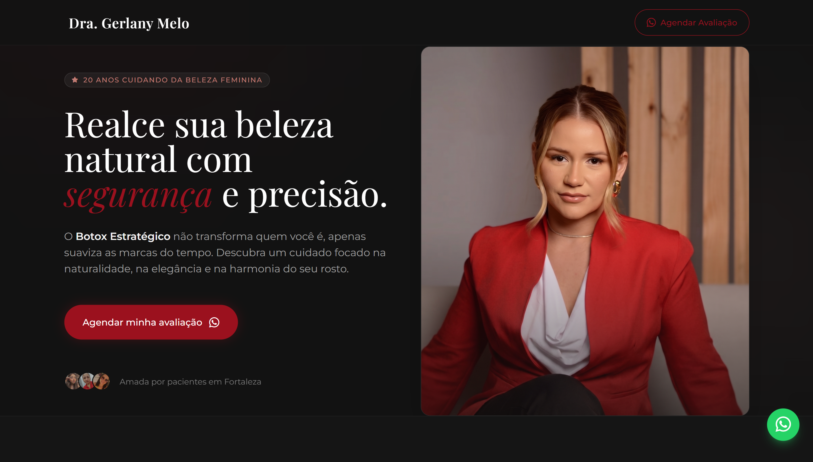

Gabriel
Capinzaiki
Web Designer
Sua marca merece uma presença digital que impressiona e, acima de tudo, converte. Muito além de um layout bonito, desenvolvo sites estratégicos, rápidos e totalmente otimizados para destacar o seu negócio na internet.
Obras Digitais
Uma seleção dos meus projetos mais recentes. Cada site é construído do zero pensando na identidade única do cliente e nos resultados que ele deseja alcançar.
Banda Untold
Presença digital completa para a banda, com design imersivo que reflete a identidade musical, galeria, agenda de shows e integração de mídia.

Gerlany Melo
Design elegante e profissional focado em autoridade e conversão. Uma plataforma completa desenvolvida para destacar a marca pessoal e atrair clientes qualificados.
Pronto para transformar sua presença online?
Não deixe seus clientes escaparem por causa de um site amador. Invista em uma plataforma que transmite credibilidade e vende por você 24h por dia.
Solicitar Orçamento Agora